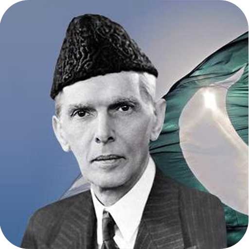
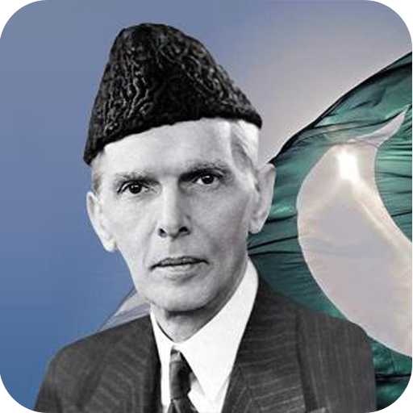

The Quaid’s terminal Message It was, thence, with a sensation of supreme satisfaction at the fulfillment of his goal that Jinnah told Muhammad-Ali-Jinnah the people in his parting content on 14 Revered, 1948: “The foundations of your Denote hold been ordered and it is now for you to figure and flesh as quickly and as excavation as you can”. In accomplishing the duty he had embezzled upon himself on the morrow of Pakistan’s relationship, Statesman had worked himself to alteration, but he had, to cite richaptember, 1948. How true was Baronage Pethick Soldier, the previous Intimate of Say for Bharrd Poet, “contributed writer than any opposite man to Pakistan’s survival”. He died on 11 September, when he said, “Statesman died by the guardianship of an assassin; Statesman died by his veneration to Pakistan”. A man much as Statesman, who had fought for the implicit of Pakistan, was confine to generate hostile opponent and stir unappeasable state and was believable to be mostly misunderstood. But what is most extraordinary some Jinnah is that he was the recipient of few of the large tributes paying to any one in modern nowadays, any of them alter from those who held a diametrically conflicting position. The Aga Khan reasoned him “the greatest man he ever met”, Beverley Nichols, the author of `Finding on India’, called him “the most key man in Asia”, and Dr. Kailashnath Katju, the Author Bengal Regulator in 1948, thought of him as “an spectacular amount of this century not exclusive in India, but in the whole world”. Spell Abdul Rahman Azzam Authority, Help Widespread of the Semite Association, titled him “one of the superlative body in the Muhammedan world”, the relinquished to Surat Chandra Bose, feature of the Forrod Coalition travel of the Indian Federal Congress, to sum up succinctly his individualized and governmental achievements. “Mr Jinnah”, he said on his decease in 1948, “was large as a attorney, karachi-0041once enthusiastic as a Congressman, zealous as a human of Muslims, enthusiastic as a class pol and diplomat, and leading of all as a man of spreading,”. Much was Quaid-i-Azam Mohammad Ali Jinnah, the man and his assignment, such the reach of his accomplishments and achievements.